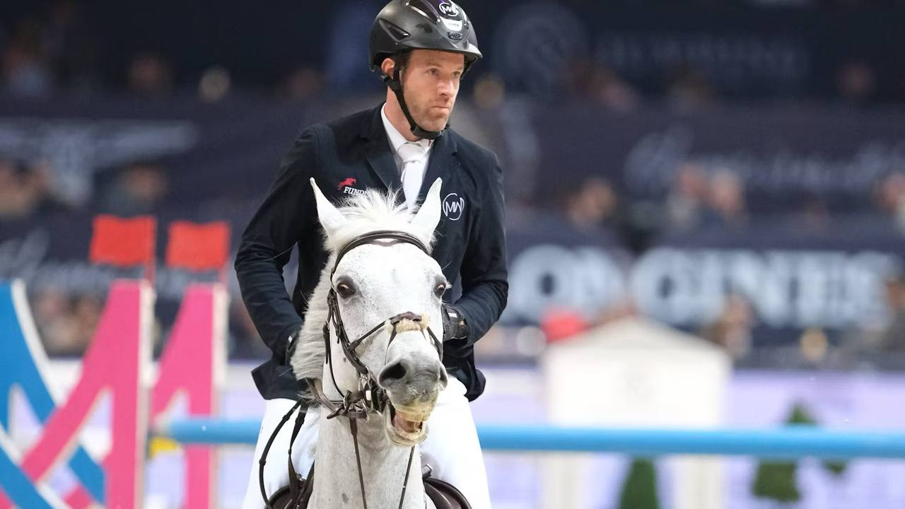

Maximilian Weishaupt se impone en la prueba estelar del CSIO3* de Mannheim
El jinete alemán Maximilian Weishaupt firmó este sábado un triunfo local en una de las pruebas estelares del CSIO3* de Mannheim, dentro del marco de la Longines EEF Nations Cup 2026, montando a Dsp Omerta Incipit con cero penalizaciones y un crono de 67.79 segundos.

El jinete alemán Maximilian Weishaupt firmó este sábado un triunfo local en una de las pruebas estelares del CSIO3* de Mannheim, dentro del marco de la Longines EEF Nations Cup 2026, montando a Dsp Omerta Incipit con cero penalizaciones y un crono de 67.79 segundos.
El podio quedó completamente teñido de plata germana. Armin Schäfer fue segundo con Dante (0 / 68.02) y Katrin Eckermann cerró la terna con Iron Dames Cascajall NRW (0 / 68.31). Las tres parejas alemanas se separaron por menos de seis décimas de segundo en el cronómetro decisivo, en un final muy ajustado que dejó la victoria en manos del binomio mejor afinado al cronómetro.
El concurso de Mannheim, organizado en el Maimarktgelände, es una de las citas de referencia del calendario primaveral alemán y combina una completa programación CSIO3* con la celebración de la Copa de Naciones de la región Centro de las Longines EEF Series. La etapa renana es uno de los puntos calientes de la liga clasificatoria europea, en una temporada que tiene en el horizonte el Campeonato del Mundo FEI de Aachen, programado del 11 al 23 de agosto.
Maximilian Weishaupt continúa así una temporada de gran nivel. El jinete alemán ya había mostrado forma en el arranque del año en el circuito indoor europeo y suma ahora un triunfo destacado en suelo alemán. Dsp Omerta Incipit, su pareja en esta jornada, vuelve a la zona alta tras varios podios internacionales en los últimos meses.
Armin Schäfer, segundo, demostró regularidad con Dante en una jornada en la que el cronómetro fue determinante. Y Katrin Eckermann, tercera, confirmó su buen estado de forma con Iron Dames Cascajall NRW, yegua que le ha aportado podios desde el invierno.
— Redacción de Hípica al Día